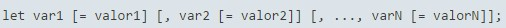
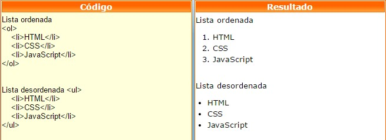

Let
The let statement declares a local scope variable, which can optionally be initialized with some value. Let allows you to declare variables by limiting their scope to the block, declaration, or expression where it is being used. This differentiates the let expression from the reserved word var, which defines a global or local variable in a function regardless of the scope of the block.
Li
The li tag defines the objects in the list. This tag is used for both ordered lists ol,as for the unordered lists ul. Example:
